High-fidelity removal of eyeglasses from video is a major challenge in facial attribute editing, as the underlying facial geometry is often obscured by complex refractive distortions and view-dependent specular reflections. While large-scale generative priors have shown promise in eyeglasses removal via static image inpainting, they often lack the structural constraints necessary to maintain identity, expression, and pose, leading to visible “identity drift” in both static images and dynamic sequences.
We propose a transfer framework that addresses the stochastic nature of generative priors. Our pipeline first extracts high-fidelity synthetic face images from a commercial-grade generative model (Nano Banana, Gemini 3 Pro Image), regularizes them via a three-stage structural filtering process to preserve identity, expression, and pose, and finally applies physically-based simulation of lens optics during training to provide diverse and realistic paired data. This transfers Nano Banana's photo-realistic, multi-view knowledge into a specialized restoration architecture, JFSnet (Joint Feature-Spatial network), which integrates DINOv2-based semantic features with a convolutional decoder and uses translation-equivariance constraints to improve temporal consistency and high-frequency detail.
On a curated FFHQ subset (12,163 images) our approach achieves high fidelity and structural accuracy while maintaining 27.68 FPS. In perceptual studies on CelebV-Text video sequences, our results are consistently preferred over diffusion- and GAN-based baselines for ocular consistency, temporal stability, and overall restoration quality.
1. Curated generative data. We synthesize eyeglass-free and glasses-wearing identities in sets of 13 poses and expressions with Nano Banana, then apply a three-stage structural filter (background L1 pose check, localized ocular/identity consistency, and a learned reconstruction threshold) to keep only high-fidelity, well-aligned pairs.
2. Physically-grounded augmentation. During training we substitute the lens regions with a physical simulation: refraction via ray-tracing through two spherical lens surfaces (Snell's law, radii from the diopter via Vogel's Rule) plus HDR specular reflections sampled along the reflected view ray. This synthesizes diverse, realistic optical effects far beyond what the generator produces on its own.
3. JFSnet restoration. A pre-trained DINOv2 (ViT-L/14) encoder supplies stable semantic features; a ResNet-based convolutional decoder reconstructs fine detail. A global skip connection bypasses the latent bottleneck, and a translation-equivariance loss enforces temporal stability without multi-frame inference or optical flow.
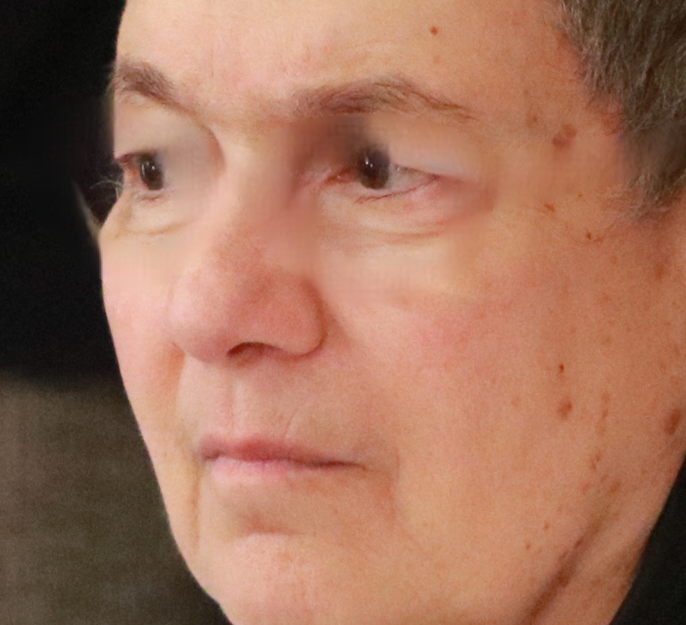
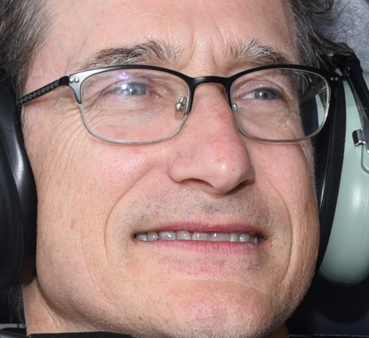
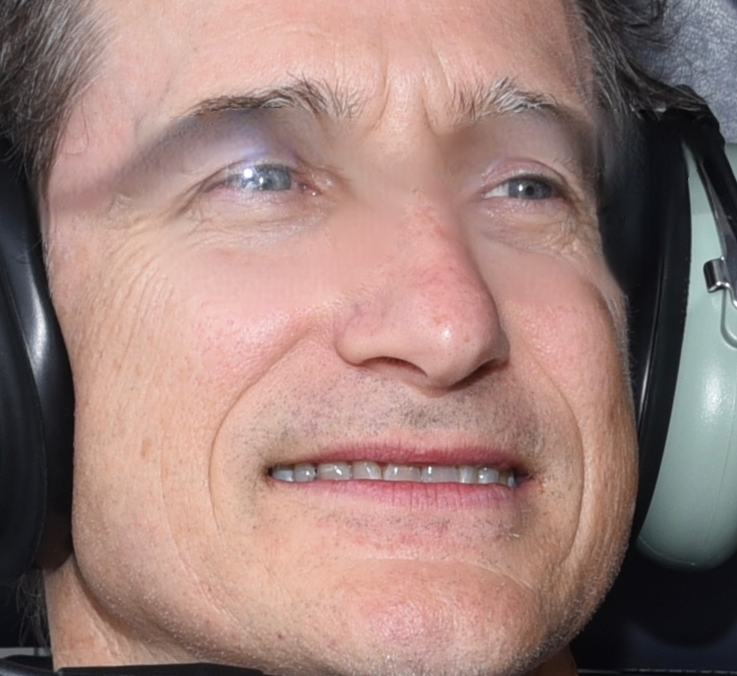
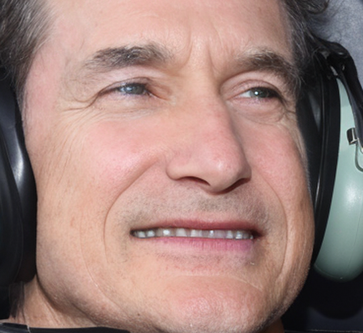
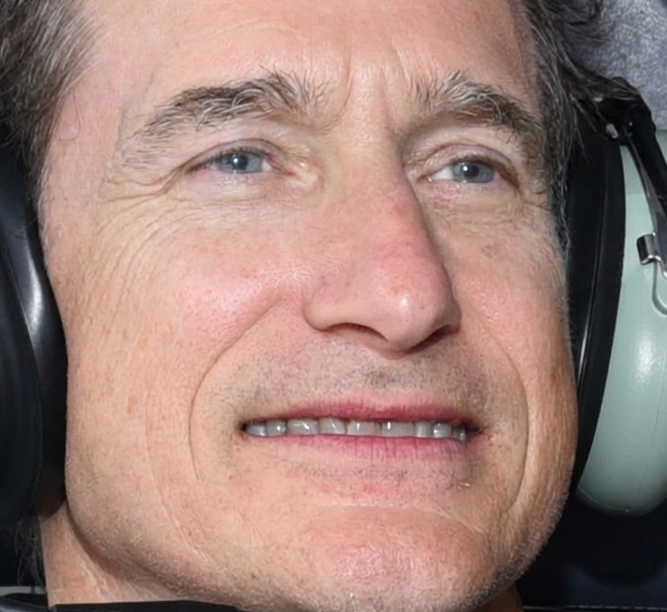
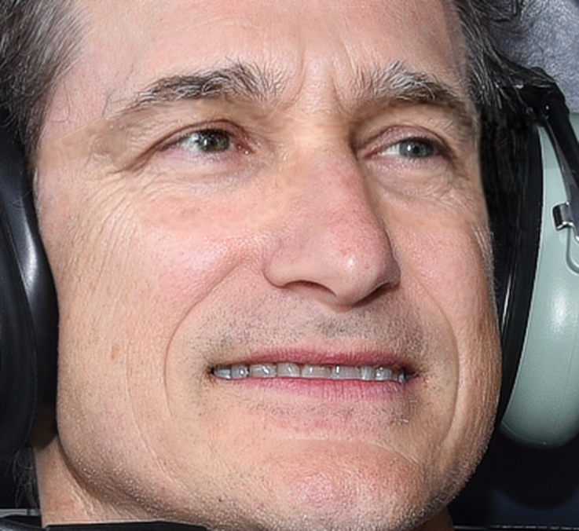
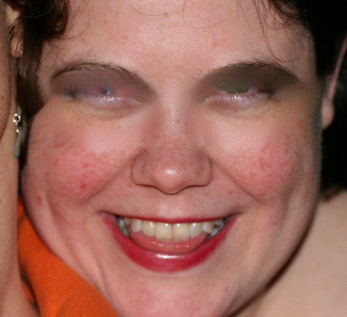
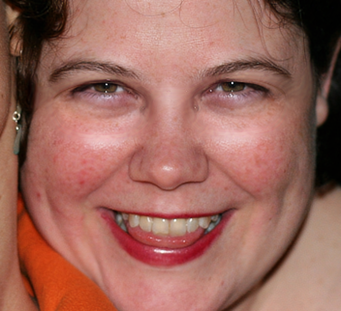
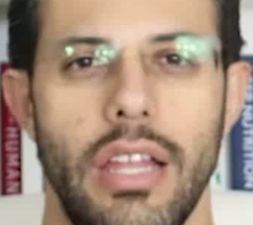
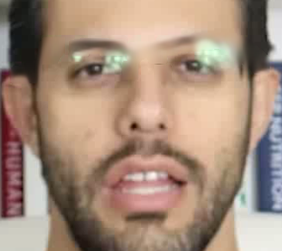
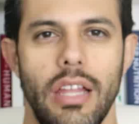
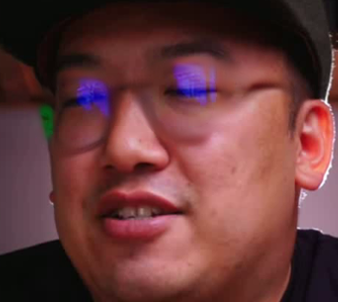
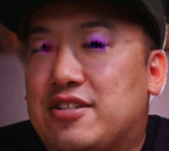
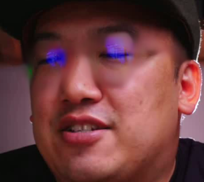
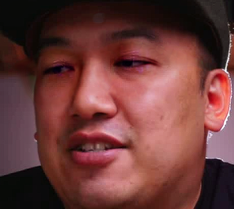
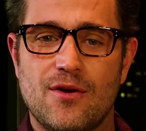
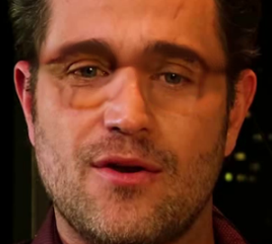
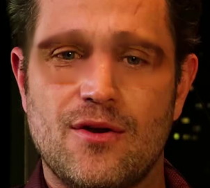
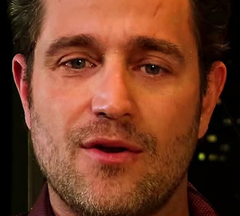
@inproceedings{spetlik2026unwarping,
title = {Unwarping the Lens: A Physics-Grounded Approach to Video Glasses Removal},
author = {{\v{S}}petl{\'i}k, Radim and Futschik, David and Dane{\v{c}}ek, Radek
and Tan, Feitong and Bai, Ziqian and Pandey, Rohit and Zhang, Yinda},
booktitle = {Proceedings of the European Conference on Computer Vision (ECCV)},
year = {2026}
}